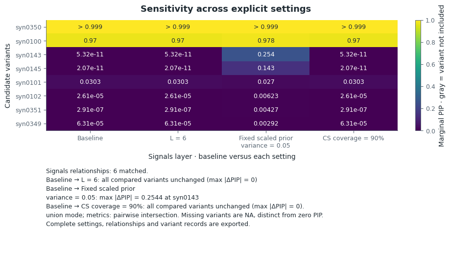

On this page
Sensitivity and LD diagnostics
Compare explicit modeling choices to see which candidates persist, then check
compatibility between the signed association statistics and LD. This workflow
continues the example and fit from the quick start; plotting and
LD diagnostics use the analysis extra.
Compare explicit settings
Name each change so that its interpretation remains separate. This plan reuses the baseline, fits two alternatives and re-extracts coverage from the baseline posterior:
sensitivity = prusie.run_sensitivity(example["inputs"], [
{"name": "larger_L", "changes": {"L": 6}},
{"name": "fixed_variance", "changes": {"scaled_prior_variance": .05,
"estimate_prior_variance": False}},
{"name": "coverage90", "report": {"coverage": .90}},
], baseline=fit)
comparison = sensitivity["comparison"]
for record in sensitivity["records"]:
print(record["name"], "new fit:", record["fit_performed"])
Expected output with an empty cache:
baseline new fit: False
larger_L new fit: True
fixed_variance new fit: True
coverage90 new fit: False
Use compare_fits directly when all fits already exist. run_sensitivity runs a
finite named plan, with requested convergence controls inherited from the
baseline unless explicitly overridden. A runtime fallback is recorded separately.
Changing coverage or purity is a report filter; it keeps the posterior.
Plot and interpret the comparison
from prusie.plots import plot_sensitivity
sensitivity_view = plot_sensitivity(
comparison, layout="compact",
display_names={"baseline": "Baseline", "larger_L": "L = 6",
"fixed_variance": "Scaled prior variance\n0.05 (fixed)",
"coverage90": "CS coverage\n90%"},
)


The two leading CS, {syn0100} and {syn0350}, persist in the saved comparison.
L=6 and the coverage-only change leave all PIPs unchanged. Fixing
scaled_prior_variance=0.05 with estimate_prior_variance=False changes the
background: syn0143 rises from about 5.318e-11 to 0.2544, and syn0145 from
about 2.066e-11 to 0.1430.
The fixed positive variance keeps all five components active, including three
without retained CS. With estimation disabled, those components cannot shrink
to V=0 through that estimation step and can distribute additional posterior mass.
Thus the main CS are stable while the background is prior-sensitive.
scaled_prior_variance means V divided by the working response variance
yty/(n−1); it is not generally the working-scale V itself. See the
worked example
and complete comparison.
Every column uses the same candidate order and linear PIP scale from 0 to 1.
The compact view includes formal CS members on the declared comparison support,
per-component top candidates and threshold candidates. Labels use <0.01 and >0.99 near the endpoints; exact
0 and 1 remain explicit, and unobserved variants are grey NA. Display text is
separate from full-precision values in plotted_data, CSV and JSON.
The report also identifies the largest PIP change on the full declared comparison
support, including variants outside the heatmap. Use candidates_only=False for
all comparison variants, or layout="full" for relation tables.
layer="components" includes all active-component relations; the default
layer="signals" emphasizes formal CS-supported relations. Table pagination
changes only the display, retaining full records.
Variant alignment and prior weights
Variant IDs determine alignment across reordered, subset or extended inputs. Missing variants remain unobserved; they are not assigned PIP=0. The default view compares each alternative with baseline, with full original settings and prior-resolution records available in the exports.
Alternative windows, nonuniform priors and null weights
An alternative inputs mapping supplies its own summary statistics, LD and
explicit variant IDs. Existing prior weights and inherited metadata columns are
mapped by those IDs, including when a previously fitted baseline is supplied.
For a subset, the prior is conditioned on the retained variants and the null
component. If raw biological weights are and null_weight is , the
constructor normalizes once, after selecting the retained
weights. Biological weights are not separately normalized first: is not
necessarily the final null probability when the raw weights do not sum to one.
Zero biological support is rejected, even with a positive null weight.
For new IDs under a nonuniform prior, provide complete alternative weights in
the alternative input order. This illustrative fragment requires new_inputs
containing the alternative aligned data and new_variant_weights in that order;
they are not provided by the toy example:
alternative_inputs = dict(new_inputs, prior_weights=new_variant_weights)
plan = [{'name': 'alternative_window', 'inputs': alternative_inputs}]
Explicit prior_weights=None requests uniform weights for the alternative.
Without an explicit prior, a uniform baseline extends its existing equal raw
weight to new IDs; the final null probability can therefore change with the
window size. New IDs also need explicit metadata columns if baseline columns
were supplied; explicit alternative metadata may omit unavailable columns.
The plan is checked for IDs, dimensions and valid weights before any fit starts.
Each fit record includes prior_resolution (mapping, policy, raw and normalized
weights, effective null probability), and input changes include input_resolution.
The cache hashes the resolved data and settings. Alternative fits are cold starts;
baseline arrays and results are not mutated.
Supported choices include L, variant priors, fixed effect variance, explicit LD/window/filter inputs, continuation and refinement. Changing only V's initialization while estimating it is computational initialization sensitivity. External-LD residual variance is not automatically estimated. Cache keys include inputs/order/alleles, settings, software and initialization; caches are caller-owned.
Common and union comparison support
mode='union' displays the union and computes each pair's PIP and posterior/CS
overlap on that pair's intersection; representative LD uses the original
representatives in the named LD reference. mode='common' uses the global intersection across
all fits for displayed variants, ranks/top-candidate selection, all PIP metrics,
shared counts, allele alignment, posterior overlap and CS-overlap evidence.
Representative-LD evidence additionally requires both original representatives
to belong to that support. The support and support_scope fields identify the
policy. Component posteriors, original CS sizes/purities and representative IDs
remain full-fit metadata; they are not refitted or renormalized on the intersection.
Reported omitted/unobserved mass is outside the declared comparison support.
An empty global intersection gives zero shared counts and unavailable PIP metrics,
with components unmatched on that support. It does not imply biological absence.
The legacy field name full_region_pip_correlation refers to the declared support
for that mode, not to a union in which missing PIPs have been filled in.
Signal matching, resolution and complete component relations
Missing variants stay NA. The default comparison shows formal-CS-supported signals against baseline; complete active-component relations are a separate view. A diffuse component can overlap another diffuse component almost perfectly without identifying a localized signal. Unresolved support changes remain visible and do not become confirmed split/merge events from diffuse graph degrees. Main candidates include formal CS members on the comparison support, top candidates and threshold candidates. A large CS is not trimmed by the display PIP threshold; common-mode support may exclude members absent from another fit. Signal relations use shared-support posterior overlap without renormalizing away unobserved mass, CS overlap and explicitly identified LD evidence. Component numbers are not matched directly. Unmatched, ambiguous and split/merge relations remain visible; a one-to-one display match is only an aid. Candidate PIP changes, ranks, thresholds, CS sizes/purity and high-LD exchanges remain separate metrics rather than a composite robustness score.
Diagnose consistency of z and LD
Run LD diagnostics explicitly for the supplied signed statistics and correlation matrix:
ld = prusie.diagnose_ld(example["inputs"]["z"], example["inputs"]["R"],
n=example["inputs"]["n"], variant_ids=fit.variant_ids)
The saved stable example assesses all 500 variants and flags none. Read the joint rule and assessed counts with that result: log LR > 2 and |adjusted z| > 2. A large conditional residual alone is not an allele-flip flag. Check ancestry, effect alleles, order, filtering and LD-reference identity when investigating a flag; this diagnostic leaves the input statistics and alleles unchanged.
| Report state | Meaning |
|---|---|
| Assessed, flagged | The joint rule was evaluated and satisfied |
| Assessed, not flagged | The joint rule was evaluated and not satisfied |
| Conditional only | Conditional quantities exist, but the full flip test is unavailable |
| Not assessed | The required observation or calculation is unavailable |
from prusie.plots import plot_ld_diagnostics
from prusie.report import write_report
ld_view = plot_ld_diagnostics(ld, layout="compact")
summary = prusie.summarize(fit, example["inputs"]["R"], z=example["inputs"]["z"])
print(prusie.summary_text(summary, ld=ld, comparison=comparison))
report = write_report(summary, "output/diagnostics", ld=ld, comparison=comparison,
figures={"Sensitivity": sensitivity_view, "LD diagnostics": ld_view})
Open output/diagnostics/index.html to read the heatmap, full-support PIP changes,
LD states and downloadable tables together. Missing observed z is not plotted
at zero; failed or skipped assessments retain their reason.
LD model, mixture optimization and recorded input information
The explicit LD diagnostic implements the RSS null model
, including finite-n z adjustment, likelihood-based s
estimation, conditional means/variances and a normal scale mixture for allele-flip
likelihood ratios. estimate_s_rss exposes null MLE, partial MLE and pseudo-MLE.
Eigen decomposition is explicit, separately timed and optionally cached. Small
or negative eigenvalues are truncated only inside the diagnostic, with warnings;
the fitting matrix is untouched. Singular s=0 uses the labelled spectral
pseudoinverse convention. Missing statistics and undefined conditional quantities
remain unassessed. The report separates assessed/flagged, assessed/not flagged,
conditional-only and unassessed rows. A finite conditional residual does not
establish that mixture optimization and the flip test succeeded. For missing z,
the diagnostic's working zero is recorded separately from the unavailable
observed statistic. Flags suggest possible mismatch; nothing is flipped or removed.
The scale-mixture likelihood is solved with a full-simplex KKT check. Some pinned
R mixsqp default fits stop at suboptimal weights; prusie records this solver
accuracy difference rather than reproducing premature stopping. Conditional
formulas and independently certified R mixture optima are validated separately.
User-provided allele labels, EAF, N, INFO, ancestry/build, LD reference sample
size and external QC flags can be carried in metadata and input_info.
Missing information stays not_assessed. Provided P values take precedence;
otherwise plotted association values use a labelled two-sided normal
approximation with a stable log-tail calculation.